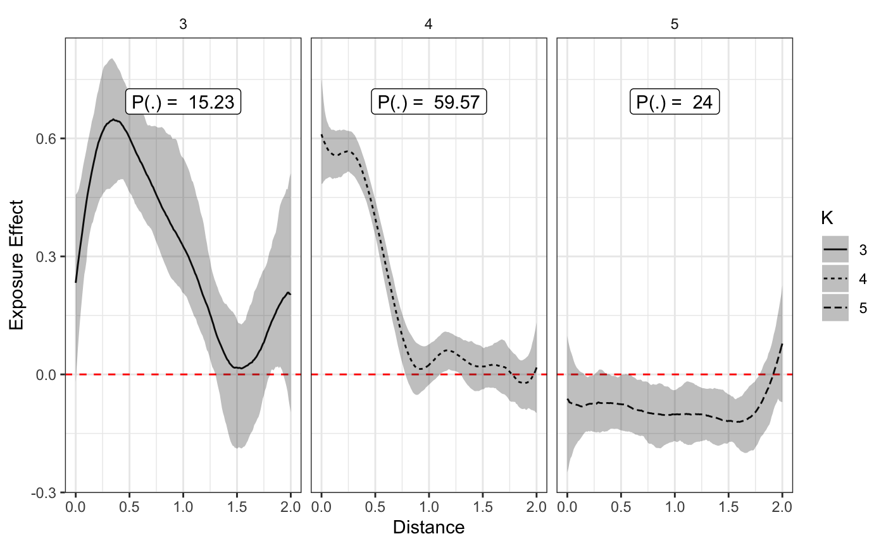
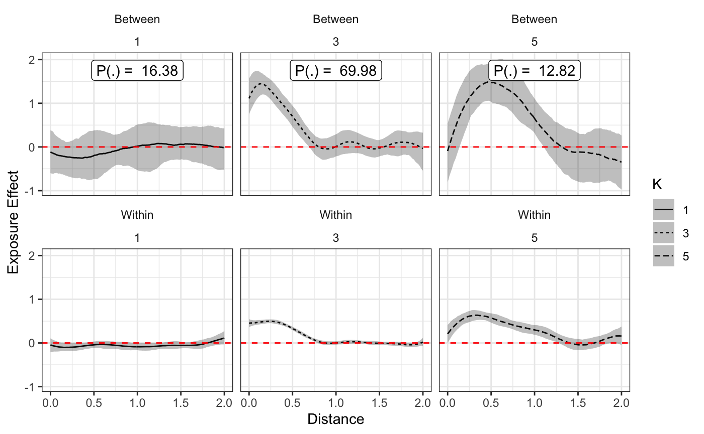

The Introductory vignette demonstrated how to fit Spatial Temporal Aggregated Predictors with Dirichlet Process Priors or STAP-DP models, to data with independent observations. In this vignette we’ll demonstrate how to fit a similar model that now takes into account correlation within subjects, the motivating experimental data structure having subjects followed across time alongside built environment features (BEFs), where changes in exposure correspond to changes in the outcome of interest.
We’ll first introduce this modeling framework in mathematical notation that corresponds to rstapDP syntax. Then, we’ll highlight the importance of decomposing time-varying covariates into between and within subject effects so that they can be estimated separately. Our data for these vignette, complex_longitudinal_cluster but assigned the shorter variable name bdf, is simulated with a hypothetical 700 subjects near FFR’s and 3 varying patterns of FFR effects high risk low risk and majority effect on BMI. These labels should be come clear shortly, if not already. We’ll begin by loading the appropriate libraries and data.
library(rstapDP) #> Loading required package: Rcpp library(rbenvo) #> #> Attaching package: 'rbenvo' #> The following object is masked from 'package:rstapDP': #> #> FFR_subjects library(ggplot2) theme_set(theme_bw())
bdf #> Subject Data: #> ---------------------------: #> Observations: 3502 #> Columns: 11 #> Num Subjects: 700 #> #> BEF Data: #> ---------------------------: #> Number of Features: 1 #> Features: #> Name Measures #> 1 FFR Distance
The first class of Longitudinal STAP-DP model’s in the rstapDP package take the following form for a simple spatial aggregated predictor:
\[ E[Y_{ij}|\mathbf{b}_i] = \mathbf{X}_{ij}^{T}\mathbf{\delta} + f(\mathcal{D}_{ij}) + \mathbf{Z}_{ij}^T\mathbf{b}_i\\ \quad i = 1,...,N ; j= 1,...,n_i\\ \mathbf{b}_i \sim N(0,\Sigma)\\ p(\delta) \propto 1\\ p(\Sigma) \propto 1\\ f_i(\mathcal{D}_i) = \sum_{l=1}^L\sum_{d \in \mathcal{D}}\beta_{il}\phi_l(d)\\ (\beta,\tau) \sim P\\ P \sim DP(\alpha,P_0)\\ P_0 \equiv MVN_L\left(\mathbf{0},\left(\sum_{m=1}^{2}\tau_mS_m \right)^{-1} \right)\prod_{m=1}^{2}Gamma(a,b). \] To model the hypothetical simulated FFR data, we’ll fit the following model, where the priors are equivalent to the above expression and consequently omitted. \[ E[BMI_{ij}] = \alpha + (sex_i)\delta_1 + (year_{ij})\delta_2 + f_i(\mathcal{D}_{ij}) + b_{i1} \\ \]
The model syntax should be familiar to those who have used the rsstap package before. The sap() keyword denotes that a spatial aggregated predictor will be modeled using the distances in the bdf benvo associated with the FFR BEF-subject data. We’ll sample a few thousand iterations from the gibbs sampler rstapDP, fixing the concentration parameter \(\alpha=1\) and take a look at the estimates.
fit <- fdp_staplmer(BMI ~ sex + year + sap(FFR) + (1|ID), benvo=bdf,fix_alpha = TRUE)
As can be seen from below, the effects look a little weird.
plot(fit,style='facet',prob_filter=0.05)

As alluded to earlier, with time-varying covariates, such as age, income, etc. It is important to decompose the measure into the baseline or between-subject effect and the change, or within-subject effect as these each represent two different effects. Failing to decompose these time-varying measures can result in invalid inference!(Nehaus and Kalbfleisch 1998)
There are a number of ways this decomposition could be be obtained. In the rstapDP model the decomposition takes the following form (keeping all other components the same as in the previous model):
\[ E[BMI_{ij}|b_{i1}] = \alpha + I(Female_i)\delta_1 + (\text{year}_{ij})\delta_2 + \Delta f_i(\text{FFR Exposure}_{ij}) + \bar{f}_i(\text{FFR Exposure}_{i}) + b_{i1} \\\quad i = 1,...,N ; j= 1,...,n_i. \]
Note that both the between-subject effect \(\bar{f}_i(\cdot)\) and the within-subject effect \(\Delta f_i(\cdot)\) are clustered together.
In order to fit this model, we use a similar syntax as before now using sap_bw() as our keyword to denote that a between-within decomposition will be performed on the design matrix associated with the FFR spatial exposure function.
fit <- fdp_staplmer(BMI ~ sex + year + sap_bw(FFR) + (1|ID), benvo=bdf,fix_alpha = TRUE)
plot(fit,prob_filter=0.05)

Plotting this model, we can now see that there are in fact, different effects both between and within subjects. These estimates also make a lot more sense visually compared to the previous plots that assumed the between-within effects were the same. ## Summary
In closing this vignette demonstrated how to use the rstapDP package to model heterogeneous effects of built environment features with longitudinal data, taking into account differences in between-within subject effects.
Nehaus, John, and Jack Kalbfleisch. 1998. “Between-and Within-Cluster Covariate Effects in the Analysis of Clustered Data.” Biometrics, June, 638–45. https://doi.org/10.2307/3109770.